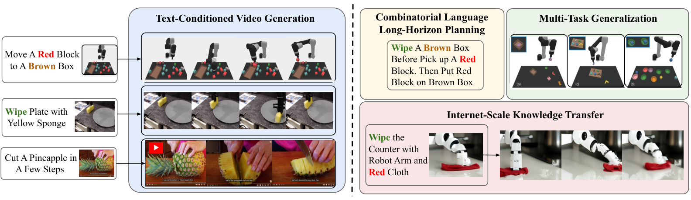
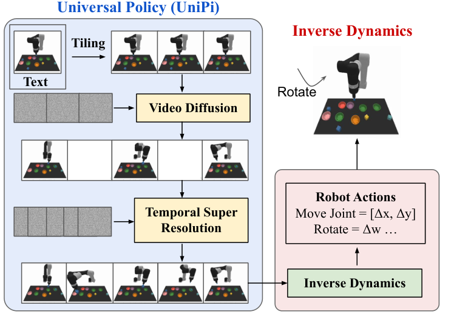
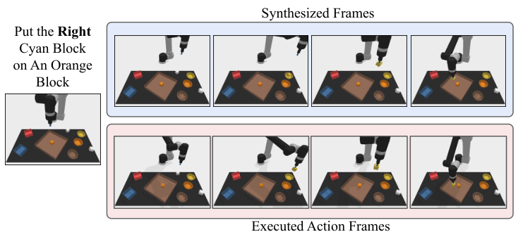
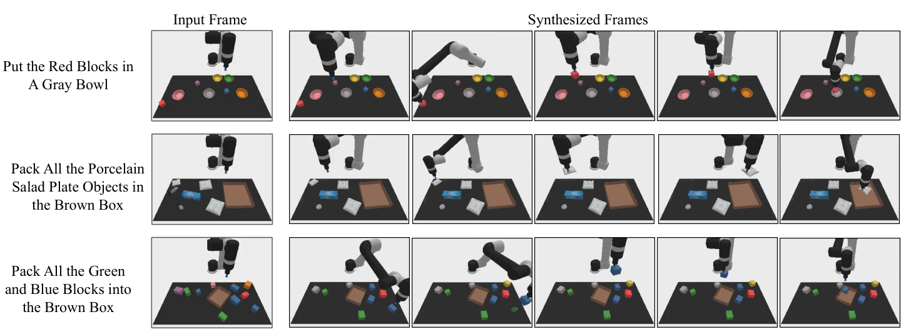
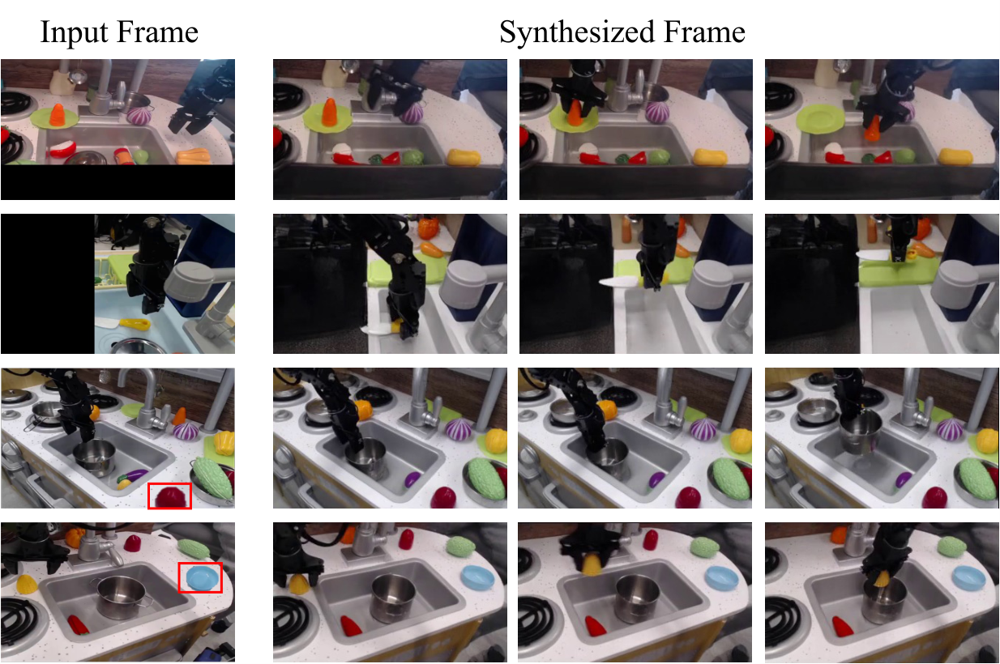
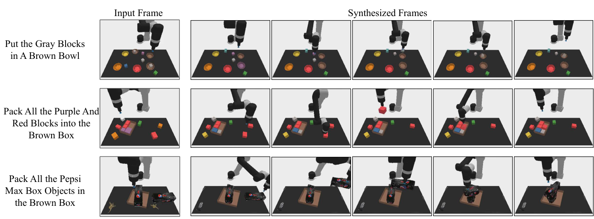

Learning Universal Policies via Text-Guided Video Generation
1. 论文速览
| 速览问题 | 简明回答 |
|---|---|
| 论文要解决什么 | 传统 RL/模仿学习策略通常绑定在某个环境的状态、动作和奖励定义上，难以跨任务、跨环境、跨数据来源复用知识；论文要解决的是如何构造更通用的语言条件决策策略。 |
| 作者的方法抓手 | 把文本作为通用目标接口，把图像/视频作为通用状态与计划接口：先用文本条件视频扩散模型生成未来视觉计划，再用任务特定逆动力学模型把视频计划转成动作。 |
| 最重要的结果 | 在组合式机器人规划中，UniPi 在 novel relation 任务上达到 $46.1\pm3.0$，显著高于最强 baseline 的 $9.6\pm1.7$；在 CLIPort 新任务迁移和真实机器人视频生成中也优于对照设置。 |
| 阅读时要注意的点 | 不要把 UniPi 理解成“直接输出动作的通用机器人 policy”。它的通用性主要在视频计划层，真正落到动作仍依赖任务/机器人特定的逆动力学模型；因此阅读实验时要区分 planner 的泛化能力和 action adapter 的适配能力。 |
难度评级：★★★★☆。需要熟悉扩散模型、离线强化学习/模仿学习、语言条件机器人操作、视频生成模型和一些模型预测控制思想。
关键词：text-conditioned video generation, universal policy, diffusion model, inverse dynamics, combinatorial generalization, robot manipulation。
核心贡献清单
- 提出 policy-as-video / UniPi。论文把 sequential decision making 写成文本条件视频生成问题，用视频轨迹作为计划空间，用文本作为任务规格。
- 提出 Unified Predictive Decision Process (UPDP)。UPDP 用图像空间、文本描述和条件视频生成器替代 MDP 中环境特定的状态、奖励和动力学模型。
- 把通用规划和任务特定执行拆开。视频扩散模型负责生成视觉计划，逆动力学模型负责从相邻图像或计划轨迹推断动作。
- 展示三类泛化。包括组合式语言目标泛化、多环境任务迁移，以及利用互联网视频预训练迁移到真实机器人视频计划。
- 附录给出可复现训练细节。包括 Video U-Net、T5-XXL prompt embedding、1.7B 参数视频模型、2M steps、batch size 2048、256 TPU-v4、逆动力学网络和 PyBullet 环境细节。

2. 动机
2.1 要解决什么问题
论文关注的是通用智能体：一个 agent 是否能在很多任务和很多环境中复用知识。语言和视觉模型已经显示出零样本/组合泛化能力，但传统控制方法通常绑定在具体环境的状态空间、动作空间和奖励函数上。
具体到机器人操作，不同任务可能有不同物体、不同目标、不同动作语义，甚至不同数据来源。直接学习一个 action-space policy 往往要求所有环境共享可比的状态与动作接口；而现实中 MuJoCo 的关节状态、Atari 的像素和真实机器人视频并不是同一种对象。
2.2 已有方法卡在哪里
论文把 MDP 抽象的问题拆成三点：
- 缺少跨环境统一状态接口。不同控制环境有不同状态空间，要统一编码会变成复杂 tokenization 问题。
- 显式奖励函数难以迁移。RL 常定义为最大化累计 reward，但跨环境任务很难设计同一种 reward。
- 动力学模型依赖环境和动作空间。$T(s'|s,a)$ 里的 $s$ 和 $a$ 都是环境特定的，难以跨 robot morphology 或跨任务共享。
因此，作者把目标从“学一个直接输出动作的策略”改成“学一个能生成未来视觉计划的模型”。文本描述任务，图像/视频承载状态变化，动作只在最后由小型逆动力学模型恢复。
2.3 本文的高层解决思路
UniPi 的 pipeline 是：
这个设计的关键直觉是：语言天然适合组合目标，图像/视频天然跨环境可读，而逆动力学可以留给每个具体机器人或环境单独学习。
4. 问题形式化
4.1 从 MDP 到 UPDP
MDP 通常写作状态、动作、转移、奖励等对象的组合。本文提出的替代抽象叫 Unified Predictive Decision Process (UPDP)，定义为：
这个定义把“规划”放在图像序列上，把“目标”放在文本上。
$$\mathcal{G} = \langle \mathcal{X}, \mathcal{C}, H, \rho\rangle$$| $\mathcal{X}$ | 图像观察空间。所有环境都可以被投影成图像或视频帧。 |
| $\mathcal{C}$ | 文本任务描述空间，用自然语言表达目标，避免手工 reward 设计。 |
| $H$ | 有限 horizon。 |
| $\rho(\cdot|x_0,c)$ | 条件视频生成器，给定初始图像和任务文本，输出未来 $H$ 步图像序列的分布。 |
令 $\tau=[x_1,\ldots,x_H]\in\mathcal{X}^H$ 表示未来图像序列。UPDP 的 planner $\rho(\tau|x_0,c)$ 不直接输出动作，而是合成“看起来像完成任务的未来视频”。
4.2 轨迹条件动作策略
为了把视频计划落到动作上，论文定义 trajectory-task conditioned policy：
它根据完整图像轨迹和文本任务，输出 $H$ 步动作序列分布。直观上，$\rho$ 负责想象目标轨迹，$\pi$ 负责解释“怎样让机器人实现这段轨迹”。
训练场景是 offline RL / imitation-style：有经验数据 $\mathcal{D}=\{(x_i,a_i)_{i=0}^{H-1},x_H,c\}_{j=1}^n$，从中估计视频生成器与逆动力学策略。
4.3 Diffusion Models for UPDP
论文用视频扩散模型实例化 $\rho(\tau|x_0,c)$。无条件扩散模型先定义前向加噪过程：
| $\tau$ | 干净的视频轨迹，即未来图像序列。 |
| $\tau_k$ | 第 $k$ 个噪声强度下的加噪轨迹。 |
| $\alpha_k,\sigma_k^2$ | 预定义噪声 schedule 的缩放系数和方差。 |
| $s(\tau_k,k)$ | 反向生成时学习到的 denoising model。 |
条件版 denoiser 写成 $s(\tau_k,k|c,x_0)$，即每一步去噪都看任务文本和初始图像。论文还用 classifier-free guidance：
这里 $\omega$ 控制条件引导强度。$\omega$ 越大，采样越偏向满足文本和初始帧条件；过强时可能牺牲自然性或多样性。
5. 方法详解

5.1 两个模块
一个文本和初始帧条件的视频扩散模型。它输出未来帧序列，扮演 task-agnostic planner。
一个逆动力学模型。它读取生成的视频轨迹，推断当前机器人/环境动作空间中的动作。
5.2 条件视频合成：为什么必须条件化初始帧
普通 text-to-video 模型只根据文本生成开放域视频；但控制计划必须从真实当前状态出发。论文比较了“只在 test-time 固定第一帧”的方案，发现后续帧容易偏离初始场景。因此，作者在训练时显式把第一帧作为条件输入，让模型学习“从这个具体状态开始完成任务”。
5.3 通过 tiling 保持轨迹一致性
控制场景要求同一个环境状态在视频中持续一致。例如桌面上的物体、机器人和背景不能在后续帧里随意漂移。论文复用了 temporal super-resolution video diffusion 架构，但把被条件化的初始观察图像沿时间维复制，在每个未来帧 denoising 时都作为额外上下文。
实现上，每个 noisy frame 都和对应的初始帧 context 做 channel-wise concatenation。这相当于让模型在整个采样过程中反复看到“真实环境长什么样”，从而减少视频计划偏离实际状态。
5.4 层级规划
长 horizon 高维控制很难一次生成所有细节。UniPi 先生成时间上稀疏的 coarse video，表示关键阶段；再用 temporal super-resolution 在时间维上插值和细化，得到更密的可执行计划。这对应传统规划中的 coarse-to-fine hierarchy。
表格中的 ablation 显示，加入 temporal hierarchy 后 Relation 任务从 $39.4\pm2.8$ 提升到 $53.2\pm2.0$，说明细粒度视频计划对复杂空间关系任务尤其重要。
5.5 测试时行为调制
论文指出可以在采样时组合一个 prior $h(\tau)$，对生成的视频轨迹施加外部约束。例如用图像分类器约束计划中的某个状态，或把某一中间帧指定成 Dirac delta，使计划经过特定状态。这让 UniPi 不重新训练也能改变计划偏好。

5.6 逆动力学与执行
给定生成视频 $\{x_h\}_{h=0}^H$ 后，逆动力学模型预测动作序列 $\{a_h\}_{h=0}^{H-1}$。论文说明逆动力学训练独立于 planner，可用更小的、有动作标注的数据集完成。
执行方式有两种：closed-loop 下每一步或每几步重新生成新计划，类似 MPC；open-loop 下直接顺序执行一次性推断出的动作序列。论文所有实验为计算效率使用 open-loop。

5.7 附录中的训练与实现细节
| 组件 | 配置 | 来源 |
|---|---|---|
| Video U-Net | 3 个 residual blocks；512 base channels；channel multiplier [1, 2, 4]；attention resolutions [6, 12, 24]；attention head dimension 64；conditioning embedding dimension 1024。 | 附录 A.1 |
| Noise schedule | log SNR range [-20, 20]。 | 附录 A.1 |
| 文本编码 | T5-XXL，4.6B parameters，用于处理 input prompts。 | 附录 A.1 |
| 模拟任务视频模型 | first-frame conditioned video diffusion：10x48x64，skip every 8 frames，1.7B parameters；temporal super-resolution：20x48x64，skip every 4 frames，1.7B parameters。 | 附录 A.1 |
| 真实世界视频模型 | finetune 16x40x24 (1.7B)、32x40x24 (1.7B)、32x80x48 (1.4B)、32x320x192 (1.2B) temporal super-resolution models。 | 附录 A.1 |
| 扩散训练 | 2M steps；batch size 2048；learning rate 1e-4；10k linear warmup；256 TPU-v4 chips。 | 附录 A.1 |
| 逆动力学网络 | 输入图像，预测 simulated robot arm 的 7-dimensional controls；3x3 conv + 3 个 residual conv layers + mean pooling + MLP(128, 7)。 | 附录 A.2 |
| 逆动力学训练 | Adam；gradient norm clipped at 1；learning rate 1e-4；2M steps；前 10k steps linear warmup。 | 附录 A.2 |
6. 实验与结果
论文用三组实验评估 UniPi：组合式策略合成、多环境迁移、真实世界迁移。评价重点不是单一环境最优控制，而是“视频作为统一策略空间”是否带来泛化。
6.1 Combinatorial Policy Synthesis
实验设置
任务来自 PDSketch combinatorial robot planning。机器人需要根据语言指令操作方块，例如“put a red block right of a cyan block”。完成任务通常包括：拿起白色方块，放入某个碗中染色，再把方块移动到指定 plate 中满足空间关系。
语言指令按 70% / 30% 分成训练可见组合和测试新组合。每个 episode 中 blocks、bowls、plates 的位置完全随机。视频模型用 200k 条 scripted agent 生成的视频训练。动作不是预设 pick-place primitive，而是连续机器人关节空间中的动作。附录 A.4
结果表
| Model | Seen | Novel | ||
|---|---|---|---|---|
| Place | Relation | Place | Relation | |
| State + Transformer BC | 19.4 ± 3.7 | 8.2 ± 2.0 | 11.9 ± 4.9 | 3.7 ± 2.1 |
| Image + Transformer BC | 9.4 ± 2.2 | 11.9 ± 1.8 | 9.7 ± 4.5 | 7.3 ± 2.6 |
| Image + TT | 17.4 ± 2.9 | 12.8 ± 1.8 | 13.2 ± 4.1 | 9.1 ± 2.5 |
| Diffuser | 9.0 ± 1.2 | 11.2 ± 1.0 | 12.5 ± 2.4 | 9.6 ± 1.7 |
| UniPi (Ours) | 59.1 ± 2.5 | 53.2 ± 2.0 | 60.1 ± 3.9 | 46.1 ± 3.0 |
结论按论文结果表述：UniPi 在 seen 与 novel language prompt combinations 上都显著高于直接行为克隆、Trajectory Transformer 风格动作序列预测和 state/action diffusion baseline。Novel Relation 从最强 baseline 的 $9.6\pm1.7$ 到 UniPi 的 $46.1\pm3.0$，说明语言条件视频计划对组合关系目标有效。

Ablation
| Frame Condition | Frame Consistency | Temporal Hierarchy | Place | Relation |
|---|---|---|---|---|
| No | No | No | 13.2 ± 3.2 | 12.4 ± 2.4 |
| Yes | No | No | 52.4 ± 2.9 | 34.7 ± 2.6 |
| Yes | Yes | No | 53.2 ± 3.0 | 39.4 ± 2.8 |
| Yes | Yes | Yes | 59.1 ± 2.5 | 53.2 ± 2.0 |
逐项解释：
- Frame condition 是最大增益来源之一，因为计划必须从当前真实图像开始。
- Frame consistency 主要帮助 Relation 任务，说明保持环境状态一致对空间关系推理有帮助。
- Temporal hierarchy 对 Relation 提升最大，从 $39.4$ 到 $53.2$，对应复杂长程计划需要 coarse-to-fine 细化。
6.2 Multi-Environment Transfer
这一实验使用 CLIPort 的语言引导 manipulation suite。训练数据来自 10 个任务的 scripted oracle demonstrations，共 200k 视频；测试在 3 个新任务上。论文强调 CLIPort 原方法不是直接可比 baseline，因为 CLIPort 预测 pick/place pose，而这里所有方法都在机器人 joint action space 执行动作。附录 A.5
| Model | Place Bowl | Pack Object | Pack Pair |
|---|---|---|---|
| State + Transformer BC | 9.8 ± 2.6 | 21.7 ± 3.5 | 1.3 ± 0.9 |
| Image + Transformer BC | 5.3 ± 1.9 | 5.7 ± 2.1 | 7.8 ± 2.6 |
| Image + TT | 4.9 ± 2.1 | 19.8 ± 0.4 | 2.3 ± 1.6 |
| Diffuser | 14.8 ± 2.9 | 15.9 ± 2.7 | 10.5 ± 2.4 |
| UniPi (Ours) | 51.6 ± 3.6 | 75.5 ± 3.1 | 45.7 ± 3.7 |
论文用该结果支持“视频计划空间比直接动作空间更容易跨任务共享”的判断：在三个测试环境上 UniPi 都明显高于 baseline。

6.3 Real World Transfer
训练数据
真实世界迁移实验混合互联网规模预训练数据和较小的真实机器人数据。预训练数据与 Imagen Video 使用的数据相同：14M video-text pairs、60M image-text pairs，以及 LAION-400M image-text dataset。机器人数据来自 Bridge dataset，共 7.2k video-text pairs，用 task IDs 作为文本；按 80% / 20% 划分 train/test。
训练流程是先在互联网规模数据上预训练，再在 Bridge train split 上 finetune。论文评估的是生成视频计划质量和由 surrogate success classifier 判断的任务成功率。
| Model (24x40) | CLIP Score ↑ | FID ↓ | FVD ↓ | Success ↑ |
|---|---|---|---|---|
| No Pretrain | 24.43 ± 0.04 | 17.75 ± 0.56 | 288.02 ± 10.45 | 72.6% |
| Pretrain | 24.54 ± 0.03 | 14.54 ± 0.57 | 264.66 ± 13.64 | 77.1% |
按论文解释，预训练改善了所有报告指标。CLIP score 只小幅提升，但 FID/FVD 和 surrogate success 都改善；作者还指出 CLIP score 可能不能充分反映控制任务是否完成，因此训练了最后帧 success classifier 作为补充指标。



6.4 附录补充结果
附录补充了三类 qualitative results：组合式泛化、multi-environment transfer、真实世界高保真计划生成。这些图不是新的定量结论，但用于说明主文结果不是个别样例。



7. 分析、局限与边界
7.1 这篇论文最有价值的地方
这篇论文最有价值的地方不是单纯把 diffusion model 用到机器人控制上，而是提出了一个清晰的接口重写：把跨任务决策中最难统一的状态、动作、奖励问题，转移到更通用的“文本目标 + 视频计划”空间里。这样做让语言模型/视频生成模型中的预训练知识有机会进入控制问题，而不是被环境特定的动作空间挡在外面。
从组会阅读角度看，UniPi 的价值在于它给出了一种新的 decomposition：planner 尽量通用，action adapter 尽量局部。视频生成器负责“想象可解释的未来轨迹”，逆动力学负责“把轨迹翻译成当前机器人能执行的动作”。这使得论文的核心问题从“能不能学一个万能动作策略”变成“能不能在视频空间中学一个可迁移的计划器”。
7.2 结果为什么站得住
论文结果之所以有说服力，首先是因为三个实验分别对应方法声称的三个能力：组合式泛化、多任务迁移、互联网视频预训练带来的真实世界迁移。它不是只在一个 toy setting 上展示视频好看，而是在 simulated combinatorial tasks、CLIPort multi-environment tasks 和 Bridge real-world videos 上分别检验了不同层面的泛化。
其次，关键对照比较直接针对了论文主张：baseline 包括直接从图像/状态预测动作的 Transformer BC、预测未来动作序列的 Trajectory Transformer 风格模型，以及在动作/状态空间做 diffusion 的 Diffuser。UniPi 在这些对照上显著更好，尤其在 novel relation 组合任务中达到 $46.1\pm3.0$，而最强 baseline 是 $9.6\pm1.7$，这支持“视频计划空间比直接动作空间更利于组合泛化”的结论。
第三，ablation 把方法中的三个关键设计拆开验证：first-frame conditioning、frame consistency tiling、temporal hierarchy 都带来增益。尤其 Relation 任务从无层级的 $39.4\pm2.8$ 提升到完整模型的 $53.2\pm2.0$，说明提升不是只来自更大模型或更多数据，而与论文提出的计划生成结构有关。
7.3 论文明确给出的结果解释
- 把动作预测转成视频预测后，语言目标可以在视觉计划空间里组合泛化。
- 图像/视频提供跨环境共享接口，使多任务训练和迁移比直接动作空间学习更自然。
- 互联网视频预训练能给真实机器人计划生成提供额外视觉和物理先验。
- 视频计划对人类可解释，因此可以用于 plan diagnosis 和 action verification。
7.4 作者自述局限
| 局限 | 论文中的说明 | 影响范围 |
|---|---|---|
| 视频扩散采样慢 | 高真实感视频生成可能需要一分钟；作者提到 progressive distillation 的初步实验带来 16x speed-up，也可使用更快 diffusion samplers。 | 实时控制、closed-loop MPC 会受影响。 |
| 主要考虑 fully observed environments | 在 partially observable environments 中，视频扩散模型可能 hallucinate 不符合真实物理世界的物体或运动。 | 遮挡、多视角不完整、隐藏状态任务。 |
| 需要视频和文本数据 | UPDP 不要求 reward 设计，但学习 planner 需要 video-task descriptions；是否优于 MDP 取决于可用数据类型。 | 没有自然视频或文本标注的控制任务。 |
| 逆动力学仍是环境特定 | Planner 可共享，但把视频转为动作需要针对具体机器人动作空间训练。 | 跨机器人形态迁移时仍需适配器数据。 |
7.5 适用边界
基于论文内容，UniPi 最自然适用于：任务可由语言描述、状态可由图像/视频充分表达、可以获得演示视频或互联网视频先验、动作可由逆动力学从视觉变化中恢复的场景。它不等价于通用 RL 求解器，也不直接解决需要精确隐藏状态估计或高频反馈控制的问题。
8. 可复现性审计
8.1 数据与环境
- 已给出：组合式任务使用 PDSketch；CLIPort 多任务使用具体训练/测试任务列表；真实世界任务使用 Bridge dataset。
- 已给出：模拟任务都用 scripted agent 生成 200k videos；组合式任务训练/测试语言组合按 70% / 30% 切分。
- 部分缺失：论文没有在正文中给出完整随机种子、训练集生成脚本或全部 prompt 列表。
8.2 模型与超参数
- 已给出：Video U-Net 核心结构、noise schedule、T5-XXL、模型规模、分辨率、帧跳采样、训练 steps、batch size、learning rate、warmup 和硬件。
- 已给出：逆动力学结构、优化器、梯度裁剪、学习率、训练步数。
- 复现门槛高：1.7B 视频模型、batch size 2048 和 256 TPU-v4 对普通实验室复现成本很高。
8.3 Baselines
附录说明了 Transformer BC、Transformer TT、State-Based Diffusion 的结构和训练设置，并说明学习率、warmup、gradient clip 等跟逆动力学设置一致。Transformer BC 使用 4 层 attention、8 heads、hidden size 512，并用卷积提取图像特征再结合 T5 embeddings。Transformer TT 预测未来 8 个 controls。State-Based Diffusion 复用类似 first-frame conditioned video diffusion 的 U-Net，但扩散对象改为 future controls。
8.4 复现建议
如果要复现实验，最小可行路径不是直接复现真实世界 1.7B/TPU 版本，而是先复现模拟组合式任务：用 PDSketch/PyBullet 生成较小规模视频，训练较小的 first-frame conditioned video diffusion，再训练逆动力学模型，最后比较 Image + Transformer BC、Image + TT 和 state/action diffusion baseline。报告中的主结论依赖视频计划相对动作计划的差异，因此该小规模路径更适合作为方法验证。